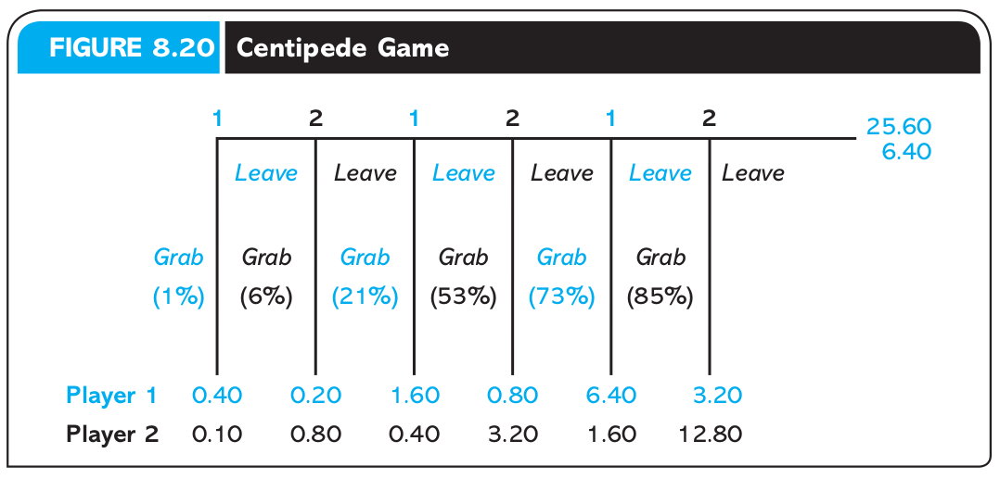

Introduction to Game Theory
Simultaneous Games
2025
Outline
Finish up sequential games
Game Tables/Strategic Form
Dominant Strategies
Nash Equilibrium
Best responses
Evidence for Sequential Rationality
Centipede Game
Two participants play this game, taking turns over five rounds.
The first is offered a choice between:
- splitting 50 cents where they keep 40 and the other player gets 10
or b) they pass the choice to the next player who gets the same choice but the pot they can choose to split from doubles
Now what would you do if you were in this situation?
When would you grab?
Centipede Game
What is the theoretical solution?
Ultimatum Game
Player A and Player B are offered a dollar to divide amongst them.
Player A gets to propose how to split the dollar (i.e., 50:50, 75 to me 25 to you, etc)
Player B can either accept the proposed split, or reject so that both players get nothing
What is the rollback solution if both players payoffs are only determined by how much money they earn?
Ultimatum Game Evidence
In spite of the theoretical prediction, the most common proposal in lab experiments is 50:50.
Most player B’s actually reject any offer of 25% or less.
This seems to indicate that most people have some sort of aversion to inequity
If you’re interested in learning more, behavioral economics develops on the basic rational agent model to make sense of some of these experimental findings
Simultaneous-Move Games
What are Simultaneous-Move Games?
- Recall from Chapter 2: Simultaneous games occur when players must move without knowing their rivals’ choices.
- This includes cases where decisions are made at different times but without knowledge of others’ decisions.
Real-World Examples
- Soccer penalty kick: Striker and goalie must choose directions simultaneously, leading to strategic guessing.
- Television manufacturers: Decide on features and pricing without knowing competitors’ decisions.
- Voting: Voters cast ballots without knowing others’ choices.
Simultaneous vs Sequential Games
Simultaneous games
- neither know the other player’s actions when they act
- graphical representation: game matrix (aka game table, payoff table)
- solution method: best response, elimination of dominated strategies
- equlibrium concept: nash equilibrium
Sequential games
- prior actions are observable to later players
- graphical representation: game tree
- solution method: backwards induction (aka rollback)
- equlibrium concept: subgame perfect nash equilibrium (aka SPNE, rollback equilibrium)
The Strategic Form
A Strategic Form game is defined by:
A set of players who have decisions
A strategy set for each player which is the collection of strategies they choose from
A payoff function which tells us how the player evaluates a strategy profile.
Tip
A strategy profile is a combination of strategies made by all players.
Depicting Simultaneous Games
- Simultaneous-move games are often depicted using payoff matrices or game tables.
| Row, Column | Left | Middle | Right |
|---|---|---|---|
| Top | (3,1) | (2,3) | (10,2) |
| High | (4,5) | (3,0) | (6,4) |
| Low | (2,2) | (5,4) | (12,3) |
| Bottom | (5,6) | (4,5) | (9,7) |
- Row chooses a strategy, and Column does as well, simultaneously.
Strategy Sets in Table 1
In this game, each players’ complete strategy only contains one action each
Player 1:
- (Top), (High), (Low), or (Bottom)
Strategy Sets in Table 1
In this game, each players’ complete strategy only contains one action each
Player 2:
- (Left), (Middle), (Right)
For now, we assume that these players can only choose one strategy at a time
I.e., not (Left, Right), (High, Low, Bottom), etc
In Chapter 7, we will relax this assumption by allowing for random mixing of strategies
Strategy Profiles in Table 1
There are twelve different strategy profiles possible in this game:
- {T,L}, {T,M}, {T,R}, {H,L}, {H,M}, {H,R}, {L,L}, {L,M}, {L,R}, {B,L}, {B,M}, {B,R}
each of which was represented by a cell in our game table.
Payoffs in Table Table 1
Notice how each cell has two numbers for the payoffs.
For example, the first cell for the strategy profile { Top, Left }:
(3,1)means that the row player has a payoff of 3, the column player gets a payoff of 1
Big 10 Game
| Ducks , Buckeyes | Run | Pass | Blitz |
|---|---|---|---|
| Run | 2, –2 | 5, –5 | 13, –13 |
| Short Pass | 6, –6 | 5.6, –5.6 | 10.5, –10.5 |
| Medium Pass | 6, –6 | 4.5, –4.5 | 1, –1 |
| Long Pass | 10, –10 | 3, –3 | –2, 2 |
Notice that in this game, the payoffs in every cell add up to one
- This is what we mean by a zero-sum game
Dominance
Dominance and Strategy Elimination
Elimination of dominated strategies can simplify finding equilibria by removing strategies
A dominant strategy is one that performs best no matter what others do.
A strategy is dominated if there is another strategy which is better no matter what the other player does.
- Dominated strategies will never by played by a rational agent
The Problem of Finding Nash Equilibria
When we first discussed NE, we found them by checking all of the strategy profiles in the game to see which of them were stable.
This is easy for a 2x2 game or even a 3x3 game like we’ve seen
- but it gets much more time-consuming in games with more players and more strategies per player
We can make it easier to find NEs with a few useful shortcuts
Strict Dominance
A strategy is said to be strictly dominated if there is some other strategy, in the same player’s strategy set, which provides that player a higher payoff, no matter what strategies the other players pick.
- Another way to phrase it is that a strategy is strictly dominated if some other strategy is a better alternative for the player, no matter what other players do.
Strict Dominance
| Guido, Luca | Testify | Keep Quiet |
|---|---|---|
| Testify | -10, -10 | 0, -20 |
| Keep Quiet | -20, 0 | -1, -1 |
Both Guido and Luca prefer to Testify, no matter whether the other player chose:
- this means that Quiet is strictly dominated, by Testify for both players.
Strict Dominance
| Guido, Luca | Testify | Keep Quiet |
|---|---|---|
| Testify | -10, -10 | 0, -20 |
| Keep Quiet | -20, 0 | -1, -1 |
It is not rational to play a strictly dominated strategy
- So we can immediately deduce that neither player would play Quiet, and the only remaining strategy profile is (Testify, Testify).
One Player has a Dominant Strategy
In the Prisoners’ Dilemma, both players have each have one dominant strategy, which made finding the NE easy.
| CONGRESS, FEDERAL RESERVE | Low interest rates | High interest rates |
|---|---|---|
| Budget balance | 3,4 | 1,3 |
| Budget deficit | 4,1 | 2,2 |
- What if only one player has a dominant strategy?
One Player has a Dominant Strategy
| CONGRESS, FEDERAL RESERVE | Low interest rates | High interest rates |
|---|---|---|
| Budget balance | 3,4 | 1,3 |
| Budget deficit | 4,1 | 2,2 |
The Fed would like to set low interest rates, but only if Congress keeps the budget under control
- Neither Low nor High interest rates are a dominant strategy
One Player has a Dominant Strategy
| CONGRESS, FEDERAL RESERVE | Low interest rates | High interest rates |
|---|---|---|
| Budget balance | 3,4 | 1,3 |
| Budget deficit | 4,1 | 2,2 |
- But Congress wants to run a budget deficit no matter what interest rates are
Finding NEs by Elimination
- If all but one of each player’s strategies can be eliminated like this (leaving only a single strategy profile), then the remaining strategy profile is a NE.
- A strictly dominated strategy can never be part of a NE.
- However, it’s rare that a player has one strategy which strictly dominates all of their others from the very start, as in the Prisoner’s Dilemma. (This is called a strictly dominant strategy.)
- Even if a player doesn’t have a strictly dominant strategy, we can still sometimes use elimination to find a NE, by using a process called Iterated Elimination of Strictly Dominated Strategies (IESDS).
Common Knowledge of Rationality
- Let’s assume that, not only is every player rational, they all know that the other players are rational too.
- This means that players can deduce which strategies the other players would never play.
- And if a player can eliminate another player’s strategy, it may reveal additional strictly dominated strategies that can be eliminated.
Eliminating Strictly Dominated Strategies
| \(P_1\), \(P_2\) | \(a\) | \(b\) | \(c\) |
|---|---|---|---|
| \(A\) | 1, 1 | 2, 2 | 3, 3 |
| \(B\) | 2, 0 | 3, 1 | 4, 2 |
| \(C\) | 3, 1 | 2, 2 | 1, 1 |
- In the game table above, there are no strictly dominant strategies.
- For Player 1, A is strictly dominated by B, but C is neither dominant nor dominated.
- And for Player 2, a is strictly dominated by b, but c is also neither dominant nor dominated.
Eliminating Strictly Dominated Strategies
| \(P_1\), \(P_2\) | \(a\) | \(b\) | \(c\) |
|---|---|---|---|
| \(A\) | 1, 1 | 2, 2 | 3, 3 |
| \(B\) | 2, 0 | 3, 1 | 4, 2 |
| \(C\) | 3, 1 | 2, 2 | 1, 1 |
- However, the assumption of Commonly Known Rationality allows Player 1 to deduce that Player 2 would never play a.
Eliminating Strictly Dominated Strategies
| \(P_1\), \(P_2\) | \(a\) | \(b\) | \(c\) |
|---|---|---|---|
| \(A\) | 1, 1 | 2, 2 | 3, 3 |
| \(B\) | 2, 0 | 3, 1 | 4, 2 |
| \(C\) | 3, 1 | 2, 2 | 1, 1 |
- Player 1 can eliminate a, just like we did—and once they do, C is strictly dominated by B.
Eliminating Strictly Dominated Strategies
| \(P_1\), \(P_2\) | \(a\) | \(b\) | \(c\) |
|---|---|---|---|
| \(A\) | 1, 1 | 2, 2 | 3, 3 |
| \(B\) | 2, 0 | 3, 1 | 4, 2 |
| \(C\) | 3, 1 | 2, 2 | 1, 1 |
- Player 2 can deduce all of this
- and once they eliminate A, a, and C, b is strictly dominated by c.
- This leaves us one strategy per player, and so the NE here is (B, c).
Eliminating Strictly Dominated Strategies
| \(P_1\), \(P_2\) | \(a\) | \(b\) | \(c\) |
|---|---|---|---|
| \(A\) | 1, 1 | 2, 2 | 3, 3 |
| \(B\) | 2, 0 | 3, 1 | 4, 2 |
| \(C\) | 3, 1 | 2, 2 | 1, 1 |
- This leaves us one strategy per player, and so the NE here is [(B, c)]{,hi}.
Order Doesn’t Matter
- In IESDS, the order in which you eliminate strategies doesn’t matter. You’ll get the same result no matter how you do it—as long as you keep going to the end.
Order Doesn’t Matter
Consider this even larger game:
| \(P_1\), \(P_2\) | \(a\) | \(b\) | \(c\) | \(d\) | \(e\) |
|---|---|---|---|---|---|
| \(A\) | 1, 1 | 2, 2 | 2, 2 | 2, 1 | 4, 1 |
| \(B\) | 1, 3 | 1, 3 | 2, 2 | 2, 3 | 3, 2 |
| \(C\) | 1, 2 | 2, 4 | 1, 3 | 2, 3 | 1, 3 |
| \(D\) | 3, 2 | 2, 3 | 1, 4 | 2, 2 | 1, 2 |
| \(E\) | 2, 1 | 3, 2 | 3, 2 | 3, 3 | 4, 1 |
Order Doesn’t Matter (start w/ \(P_1\))
Suppose we start by looking for Player 1’s strictly dominated strategies:
| \(P_1\), \(P_2\) | \(a\) | \(b\) | \(c\) | \(d\) | \(e\) |
|---|---|---|---|---|---|
| \(A\) | 1, 1 | 2, 2 | 2, 2 | 2, 1 | 4, 1 |
| \(B\) | 1, 3 | 1, 3 | 2, 2 | 2, 3 | 3, 2 |
| \(C\) | 1, 2 | 2, 4 | 1, 3 | 2, 3 | 1, 3 |
| \(D\) | 3, 2 | 2, 3 | 1, 4 | 2, 2 | 1, 2 |
| \(E\) | 2, 1 | 3, 2 | 3, 2 | 3, 3 | 4, 1 |
Order Doesn’t Matter (start w/ \(P_1\))
Suppose we start by looking for Player 1’s strictly dominated strategies:
| \(P_1\), \(P_2\) | \(a\) | \(b\) | \(c\) | \(d\) | \(e\) |
|---|---|---|---|---|---|
| \(A\) | 1, 1 | 2, 2 | 2, 2 | 2, 1 | 4, 1 |
| \(B\) | 1, 3 | 1, 3 | 2, 2 | 2, 3 | 3, 2 |
| \(C\) | 1, 2 | 2, 4 | 1, 3 | 2, 3 | 1, 3 |
| \(D\) | 3, 2 | 2, 3 | 1, 4 | 2, 2 | 1, 2 |
| \(E\) | 2, 1 | 3, 2 | 3, 2 | 3, 3 | 4, 1 |
- \(B\) and \(C\) are strictly dominated by \(E\)
Order Doesn’t Matter (start w/ \(P_1\))
| \(P_1\), \(P_2\) | \(a\) | \(b\) | \(c\) | \(d\) | \(e\) |
|---|---|---|---|---|---|
| \(A\) | 1, 1 | 2, 2 | 2, 2 | 2, 1 | 4, 1 |
| \(B\) | 1, 3 | 1, 3 | 2, 2 | 2, 3 | 3, 2 |
| \(C\) | 1, 2 | 2, 4 | 1, 3 | 2, 3 | 1, 3 |
| \(D\) | 3, 2 | 2, 3 | 1, 4 | 2, 2 | 1, 2 |
| \(E\) | 2, 1 | 3, 2 | 3, 2 | 3, 3 | 4, 1 |
Are there any newly strictly dominated strategies after eliminating \(B\) and \(C\)?
Order Doesn’t Matter (start w/ \(P_1\))
| \(P_1\), \(P_2\) | \(a\) | \(b\) | \(c\) | \(d\) | \(e\) |
|---|---|---|---|---|---|
| \(A\) | 1, 1 | 2, 2 | 2, 2 | 2, 1 | 4, 1 |
| \(B\) | 1, 3 | 1, 3 | 2, 2 | 2, 3 | 3, 2 |
| \(C\) | 1, 2 | 2, 4 | 1, 3 | 2, 3 | 1, 3 |
| \(D\) | 3, 2 | 2, 3 | 1, 4 | 2, 2 | 1, 2 |
| \(E\) | 2, 1 | 3, 2 | 3, 2 | 3, 3 | 4, 1 |
After eliminating \(B\) and \(C\), now \(a\) and \(e\) are strictly dominated by \(b\) for Player 2
This is conditional on Player 2 knowing that if Player 1 is rational, they would never play \(B\) or \(C\)
Order Doesn’t Matter (start w/ \(P_1\))
| \(P_1\), \(P_2\) | \(a\) | \(b\) | \(c\) | \(d\) | \(e\) |
|---|---|---|---|---|---|
| \(A\) | 1, 1 | 2, 2 | 2, 2 | 2, 1 | 4, 1 |
| \(B\) | 1, 3 | 1, 3 | 2, 2 | 2, 3 | 3, 2 |
| \(C\) | 1, 2 | 2, 4 | 1, 3 | 2, 3 | 1, 3 |
| \(D\) | 3, 2 | 2, 3 | 1, 4 | 2, 2 | 1, 2 |
| \(E\) | 2, 1 | 3, 2 | 3, 2 | 3, 3 | 4, 1 |
- Now \(A\) and \(D\) are strictly dominated by \(E\) for Player 1
Order Doesn’t Matter (start w/ \(P_1\))
| \(P_1\), \(P_2\) | \(a\) | \(b\) | \(c\) | \(d\) | \(e\) |
|---|---|---|---|---|---|
| \(A\) | 1, 1 | 2, 2 | 2, 2 | 2, 1 | 4, 1 |
| \(B\) | 1, 3 | 1, 3 | 2, 2 | 2, 3 | 3, 2 |
| \(C\) | 1, 2 | 2, 4 | 1, 3 | 2, 3 | 1, 3 |
| \(D\) | 3, 2 | 2, 3 | 1, 4 | 2, 2 | 1, 2 |
| \(E\) | 2, 1 | 3, 2 | 3, 2 | 3, 3 | 4, 1 |
- And finally, \(b\) and \(c\) are strictly dominated by \(d\)
Order Doesn’t Matter (start w/ \(P_1\))
| \(P_1\), \(P_2\) | \(a\) | \(b\) | \(c\) | \(d\) | \(e\) |
|---|---|---|---|---|---|
| \(A\) | 1, 1 | 2, 2 | 2, 2 | 2, 1 | 4, 1 |
| \(B\) | 1, 3 | 1, 3 | 2, 2 | 2, 3 | 3, 2 |
| \(C\) | 1, 2 | 2, 4 | 1, 3 | 2, 3 | 1, 3 |
| \(D\) | 3, 2 | 2, 3 | 1, 4 | 2, 2 | 1, 2 |
| \(E\) | 2, 1 | 3, 2 | 3, 2 | 3, 3 | 4, 1 |
So we are left with a single strategy profile:
- (\(E\) , \(d\))
Order Doesn’t Matter (start w/ \(P_1\))
| \(P_1\), \(P_2\) | \(a\) | \(b\) | \(c\) | \(d\) | \(e\) |
|---|---|---|---|---|---|
| \(A\) | 1, 1 | 2, 2 | 2, 2 | 2, 1 | 4, 1 |
| \(B\) | 1, 3 | 1, 3 | 2, 2 | 2, 3 | 3, 2 |
| \(C\) | 1, 2 | 2, 4 | 1, 3 | 2, 3 | 1, 3 |
| \(D\) | 3, 2 | 2, 3 | 1, 4 | 2, 2 | 1, 2 |
| \(E\) | 2, 1 | 3, 2 | 3, 2 | 3, 3 | 4, 1 |
is this a NE?
- is there any way either player could unilateraly deviate to a higher payoff?
Order Doesn’t Matter (start w/ \(P_2\))
Now what happens if we reset and start instead by looking for Player 2’s strictly dominated strategies?
| \(P_1\), \(P_2\) | \(a\) | \(b\) | \(c\) | \(d\) | \(e\) |
|---|---|---|---|---|---|
| \(A\) | 1, 1 | 2, 2 | 2, 2 | 2, 1 | 4, 1 |
| \(B\) | 1, 3 | 1, 3 | 2, 2 | 2, 3 | 3, 2 |
| \(C\) | 1, 2 | 2, 4 | 1, 3 | 2, 3 | 1, 3 |
| \(D\) | 3, 2 | 2, 3 | 1, 4 | 2, 2 | 1, 2 |
| \(E\) | 2, 1 | 3, 2 | 3, 2 | 3, 3 | 4, 1 |
Order Doesn’t Matter (start w/ \(P_2\))
| \(P_1\), \(P_2\) | \(a\) | \(b\) | \(c\) | \(d\) | \(e\) |
|---|---|---|---|---|---|
| \(A\) | 1, 1 | 2, 2 | 2, 2 | 2, 1 | 4, 1 |
| \(B\) | 1, 3 | 1, 3 | 2, 2 | 2, 3 | 3, 2 |
| \(C\) | 1, 2 | 2, 4 | 1, 3 | 2, 3 | 1, 3 |
| \(D\) | 3, 2 | 2, 3 | 1, 4 | 2, 2 | 1, 2 |
| \(E\) | 2, 1 | 3, 2 | 3, 2 | 3, 3 | 4, 1 |
- \(a\) and \(e\) are strictly dominated by \(b\)
Order Doesn’t Matter (start w/ \(P_2\))
| \(P_1\), \(P_2\) | \(a\) | \(b\) | \(c\) | \(d\) | \(e\) |
|---|---|---|---|---|---|
| \(A\) | 1, 1 | 2, 2 | 2, 2 | 2, 1 | 4, 1 |
| \(B\) | 1, 3 | 1, 3 | 2, 2 | 2, 3 | 3, 2 |
| \(C\) | 1, 2 | 2, 4 | 1, 3 | 2, 3 | 1, 3 |
| \(D\) | 3, 2 | 2, 3 | 1, 4 | 2, 2 | 1, 2 |
| \(E\) | 2, 1 | 3, 2 | 3, 2 | 3, 3 | 4, 1 |
- \(A\), \(B\), \(C\), and \(D\) are now strictly dominated by \(E\)
Order Doesn’t Matter (start w/ \(P_2\))
| \(P_1\), \(P_2\) | \(a\) | \(b\) | \(c\) | \(d\) | \(e\) |
|---|---|---|---|---|---|
| \(A\) | 1, 1 | 2, 2 | 2, 2 | 2, 1 | 4, 1 |
| \(B\) | 1, 3 | 1, 3 | 2, 2 | 2, 3 | 3, 2 |
| \(C\) | 1, 2 | 2, 4 | 1, 3 | 2, 3 | 1, 3 |
| \(D\) | 3, 2 | 2, 3 | 1, 4 | 2, 2 | 1, 2 |
| \(E\) | 2, 1 | 3, 2 | 3, 2 | 3, 3 | 4, 1 |
- \(b\) and \(c\) are now strictly dominated by \(d\)
Order Doesn’t Matter (start w/ \(P_2\))
| \(P_1\), \(P_2\) | \(a\) | \(b\) | \(c\) | \(d\) | \(e\) |
|---|---|---|---|---|---|
| \(A\) | 1, 1 | 2, 2 | 2, 2 | 2, 1 | 4, 1 |
| \(B\) | 1, 3 | 1, 3 | 2, 2 | 2, 3 | 3, 2 |
| \(C\) | 1, 2 | 2, 4 | 1, 3 | 2, 3 | 1, 3 |
| \(D\) | 3, 2 | 2, 3 | 1, 4 | 2, 2 | 1, 2 |
| \(E\) | 2, 1 | 3, 2 | 3, 2 | 3, 3 | 4, 1 |
Once again we’re left with the same strategy profile:
- (\(E\) , \(d\))
IESDS in a Nutshell
The process of IESDS can be summed up in three steps:
- Search for a strictly dominated strategy belonging to any player. If none exists, stop here: IESDS is completed.
- Eliminate (cross out) that strategy. Optionally, re-draw the game table without the eliminated strategy.
- Return to step 1.
IESDS Example:
Try it yourself!
| \(P_1\), \(P_2\) | x | y | z |
|---|---|---|---|
| X | 1,3 | 2,2 | 3,2 |
| Y | 2,2 | 2,2 | 4,3 |
| Z | 1,1 | 0,2 | 1,1 |
Which strategy is strictly dominated?
IESDS Example:
| \(P_1\), \(P_2\) | x | y | z |
|---|---|---|---|
| X | 1,3 | 2,2 | 3,2 |
| Y | 2,2 | 2,2 | 4,3 |
| Z | 1,1 | 0,2 | 1,1 |
Which strategy is strictly dominated?
- Z
IESDS Example:
| \(P_1\), \(P_2\) | x | y | z |
|---|---|---|---|
| X | 1,3 | 2,2 | 3,2 |
| Y | 2,2 | 2,2 | 4,3 |
| Z | 1,1 | 0,2 | 1,1 |
What does IESDS tell you about the NE of this game?
IESDS Example:
| \(P_1\), \(P_2\) | x | y | z |
|---|---|---|---|
| X | 1,3 | 2,2 | 3,2 |
| Y | 2,2 | 2,2 | 4,3 |
| Z | 1,1 | 0,2 | 1,1 |
What does IESDS tell you about the NE of this game?
- Nothing! (beyond that none involve Z)
Failures of Elimination Methods
- There’s no guarantee that any particular game will contain strictly dominated strategies
- Even when there are strategies we can eliminate, there may not be enough of them to find a NE just by elimination.
- So why bother with this?
- Even if elimination doesn’t immediately identify a NE, it can still be helpful to simplify the game before trying other methods.
- Simplifying by elimination is especially useful when dealing with mixed strategies
Nash Equilibrium
Nash Equilibrium
The most basic form of equilibrium in game theory is the Nash Equilibrium (NE), which can be described as:
A strategy profile such that no player can obtain a larger payoff by unilaterally deviating
A strategy profile such that no single player can make themselves better off by changing only their own strategy.
A strategy profile such that, after the game is played, each player is satisfied that they could not have made a better decision
Nash Equilibrium
Nash Equilibrium
A list of strategies where each player’s strategy is the best response to the other’s best response strategy
- In other words, no player has any incentive to deviate in their strategy away from an equilibrium strategy
- It is central to the analysis of simultaneous-move games.
- Can occur in pure strategies (where players choose a single action) or mixed strategies (randomized choices).
Nash Equilibrium in Table 1
Let’s look at one specific strategy profile in this game:
| Left | Middle | Right | |
|---|---|---|---|
| Top | (3,1) | (2,3) | (10,2) |
| High | (4,5) | (3,0) | (6,4) |
| Low | (2,2) | (5,4) | (12,3) |
| Bottom | (5,6) | (4,5) | (9,7) |
Row chooses Low and Column chooses Middle
- Is this stable?
Nash Equilibrium in Table 1
Let’s look at one specific strategy profile in this game:
| Left | Middle | Right | |
|---|---|---|---|
| Top | (3,1) | (2,3) | (10,2) |
| High | (4,5) | (3,0) | (6,4) |
| Low | (2,2) | (5,4) | (12,3) |
| Bottom | (5,6) | (4,5) | (9,7) |
Row chooses Low and Column chooses Middle
- Given that Column plays Middle, is there any way for Row to get a higher payoff?
Nash Equilibrium in Table 1
Let’s look at one specific strategy profile in this game:
| Left | Middle | Right | |
|---|---|---|---|
| Top | (3,1) | (2,3) | (10,2) |
| High | (4,5) | (3,0) | (6,4) |
| Low | (2,2) | (5,4) | (12,3) |
| Bottom | (5,6) | (4,5) | (9,7) |
Row chooses Low and Column chooses Middle
- Given that Row plays Low, is there any way for Column to get a higher payoff?
Nash Equilibrium in Table 1
What is special about the strategy profile (Low, Middle)?
It’s stable because neither player would have any incentive to change what they’re doing
In other words, neither player has regrets over their choice given what the other player is doing
However, notice that this doesn’t mean that this is the best that the players could do jointly
Other Strategy Profiles in Table 1
| Left | Middle | Right | |
|---|---|---|---|
| Top | (3,1) | (2,3) | (10,2) |
| High | (4,5) | (3,0) | (6,4) |
| Low | (2,2) | (5,4) | (12,3) |
| Bottom | (5,6) | (4,5) | (9,7) |
What about (Bottom, Right)?
Other Strategy Profiles in Table 1
| Left | Middle | Right | |
|---|---|---|---|
| Top | (3,1) | (2,3) | (10,2) |
| High | (4,5) | (3,0) | (6,4) |
| Low | (2,2) | (5,4) | (12,3) |
| Bottom | (5,6) | (4,5) | (9,7) |
Even though (Bottom, Right) is a Pareto improvement on (Low, Middle), it is unstable because it would be rational for Row player to change their strategy to Low to try to get the higher payoff of 12
Other Strategy Profiles in Table 1
| Left | Middle | Right | |
|---|---|---|---|
| Top | (3,1) | (2,3) | (10,2) |
| High | (4,5) | (3,0) | (6,4) |
| Low | (2,2) | (5,4) | (12,3) |
| Bottom | (5,6) | (4,5) | (9,7) |
What about (Top, Left)?
Table 1 with a tie in payoffs
| Left | Middle | Right | |
|---|---|---|---|
| Top | (3,1) | (2,3) | (10,2) |
| High | (4,5) | (3,0) | (6,4) |
| Low | (2,2) | (5,4) | (12,3) |
| Bottom | (5,6) | (5,5) | (9,7) |
A Nash equilibrium doesn’t require the equilibrium strategies to be strict improvements.
- (Low, Middle) is still a NE because the payoff of 5 to Row player is weakly (\(\geq\)) higher than the payoff of Bottom
Nash Equilibrium as a System of Beliefs
So a Nash Equilibrium requires players best responding to each other.
But if a game is simultaneous, then players can’t observe what the other does
So how can someone respond to something that hasn’t happened yet?
Nash Equilibrium as a System of Beliefs
How to make sense of best-responses in simultaneous games:
Players might base their beliefs of the other players’ strategies on experience from playing similar games before
You might also put yourself into your opponents’ shoes to think about what they might do
You should also expect that they are thinking about what you’re thinking
- and also that you would be thinking about what they are thinking about what you are thinking
The Battle of Wits
Let’s see an example of this logic in action:
Nash Equilibrium as a System of Beliefs
- Nash equilibrium assumes:
- Players form beliefs about the strategies of others.
- Each player then chooses their best response based on these beliefs.
- In equilibrium, each player’s beliefs about their opponents strategy is realized.
Strategic Uncertainty
- Players are uncertain about others’ choices but form subjective beliefs about them.
- These beliefs are central to decision-making in Nash equilibrium.
- The equilibrium is found when every player’s belief about others’ actions is correct, and their response to these beliefs is optimal.
An Equivalent Definition of NE 1
Nash Equilibrium
A set of strategies, one for each player, such that:
each player has correct beliefs about the strategies of the others and
the strategy of each is the best for herself, given her beliefs about the strategies of the others.
A best response is the optimal strategy holding the other’s strategy constant
Best-Response Analysis
Limits of IESDS
Not every game is dominance solvable through IESDS.
Can we still find NE in those games?
- Yes! We just need to remember the best-responding part of our definition of NE
Best-Responding
- In finding Nash equilibrium, best-response analysis is key.
- Each player chooses their best action in response to the strategies of others.
- This iterative process helps in solving games with many possible strategies.
Best Responses
- If you know other player’s strategy, then you can respond accordingly
- Even if you don’t know, forming a belief helps you solve the game
Best Response Definition
Strategy \(s_i\) is a best response to \(s_{-i}\) if and only if it provides the highest payoff possible when the other player chooses \(s_{-i}\).
- The best response correspondence \(b_i(s_{-i})\) is the strategy or set of strategies that give the highest payoff against \(s_{-i}\)
Some Notes on Best Responses
- “to another player’s strategy” is important.
- A strategy can only be a best response to some strategy of the other player.
- No such thing as a universally best response (that’s a dominant strategy)
- There is always at least one best response to another player’s strategy
- And there may be multiple best responses to another players strategy
Best Responses in Practice
Marking best responses in normal form:
- Go through each strategy in the game of one player (row or column)
- Mark the best option of the responding player
- Okay to mark the payoffs, but keep in mind they are not same as the strategies
- Don’t try to describe the best response using the payoff.
- A best response is a strategy
Best Response Analysis
Let’s revisit this game from the beginning of the lecture:
| Row, Column | Left | Middle | Right |
|---|---|---|---|
| Top | 3, 1 | 2, 3 | 10, 2 |
| High | 4, 5 | 3, 0 | 6, 4 |
| Low | 2, 2 | 5, 4 | 12, 3 |
| Bottom | 5, 6 | 4, 5 | 9, 7 |
- We’ll break down the best responses one step at a time
Best Response Analysis
Suppose you’re the Row player:
| Row | Left |
|---|---|
| Top | 3 |
| High | 4 |
| Low | 2 |
| Bottom | 5 |
What would you do if you knew Column will play Left?
Best Response Analysis
| Row | Left |
|---|---|
| Top | 3 |
| High | 4 |
| Low | 2 |
| Bottom | 5 |
We’ll underline this payoff as Bottom is the best response to Left
Best Response Analysis
| Row | Left | Middle |
|---|---|---|
| Top | 3 | 2 |
| High | 4 | 3 |
| Low | 2 | 5 |
| Bottom | 5 | 4 |
Also, Low is the best response to Middle
Best Response Analysis
| Row | Left | Middle | Right |
|---|---|---|---|
| Top | 3 | 2 | 10 |
| High | 4 | 3 | 6 |
| Low | 2 | 5 | 12 |
| Bottom | 5 | 4 | 9 |
And Low is also the best response to Right
Best Response Analysis
| Row, Column | Left | Middle | Right |
|---|---|---|---|
| Top | 3, 1 | 2, 3 | 10, 2 |
| High | 4 | 3 | 6 |
| Low | 2 | 5 | 12 |
| Bottom | 5 | 4 | 9 |
For Column, Middle is a best response to Top
Best Response Analysis
| Row, Column | Left | Middle | Right |
|---|---|---|---|
| Top | 3, 1 | 2, 3 | 10, 2 |
| High | 4, 5 | 3, 0 | 6, 6 |
| Low | 2 | 5 | 12 |
| Bottom | 5 | 4 | 9 |
Right is a best response to High
Best Response Analysis
| Row, Column | Left | Middle | Right |
|---|---|---|---|
| Top | 3, 1 | 2, 3 | 10, 2 |
| High | 4, 5 | 3, 0 | 6, 6 |
| Low | 2, 2 | 5, 4 | 12, 3 |
| Bottom | 5 | 4 | 9 |
Middle is a best response to Low
Best Response Analysis
| Row, Column | Left | Middle | Right |
|---|---|---|---|
| Top | 3, 1 | 2, 3 | 10, 2 |
| High | 4, 5 | 3, 0 | 6, 6 |
| Low | 2, 2 | 5, 4 | 12, 3 |
| Bottom | 5, 6 | 4, 5 | 9, 7 |
And Right is a best response to Bottom
Best Response Analysis
| Row, Column | Left | Middle | Right |
|---|---|---|---|
| Top | 3, 1 | 2, 3 | 10, 2 |
| High | 4, 5 | 3, 0 | 6, 6 |
| Low | 2, 2 | 5, 4 | 12, 3 |
| Bottom | 5, 6 | 4, 5 | 9, 7 |
The NE of this game is where the best responses intersect:
- (Low, Middle)
- This results in a payoff of 5 to Row, 4 to Column
Nash Equilibrium from Best Responses
Recall the various definitions of a Nash Equilibrium:
no-one can improve their payoff by changing only their own strategy.
Each player has no regrets about their strategy.
Everyone’s strategy is a best responses to everyone else’s
Categorizing Simultaneous Games
Games with Multiple Equilibria
So we’ve seen games with only one unique NE
But this doesn’t have to be the case
Next we will see games with multiple possible strategy profiles which are stable.
Coordination Games
I agreed to meet my friend for coffee, but we didn’t decide on which cafe and now my phone is dead:
| Dante, Jose | Starbucks | Peet’s |
|---|---|---|
| Starbucks | 1, 1 | 0, 0 |
| Peet’s | 0, 0 | 1, 1 |
Coordination Games
| Dante, Jose | Starbucks | Peet’s |
|---|---|---|
| Starbucks | 1, 1 | 0, 0 |
| Peet’s | 0, 0 | 1, 1 |
There are two NE’s where we are both happy
The problem is getting there
This type of game is called a coordination game
Coordination Games
Even when there is an obviously preferred NE for both players, it may not be guaranteed that we will get there:
| Dante, Jose | Starbucks | Roma |
|---|---|---|
| Starbucks | 1, 1 | 0, 0 |
| Roma | 0, 0 | 2, 2 |
For different sets of beliefs, either strategy profile is stable
If we start with (Starbucks, Starbucks) no incentive for either of us to deviate
Can we change equilibria?
- Only with communication or joint enforcement
Coordination Games
What about when players have different preferences over NE?
| Dante, Jose | T4 | Metropol |
|---|---|---|
| T4 | 2, 1 | 0, 0 |
| Metropol | 0, 0 | 1, 2 |
- If Dante tries to be nice and go to Metropol,
- what if Jose does the same thing and goes to T4?
- Repeated games may allow for opportunities to alternate
Anti-coordination: The Game of Chicken
| James, Dean | Swerve (Chicken) | Straight (Tough) |
|---|---|---|
| Swerve | 0, 0 | -1, 1 |
| Straight | 1, -1 | -2, -2 |
Suppose that James and Dean are driving headlong towards each other, but neither one wants to be the ‘chicken’ by swerving out of the way
- What are the best respones?
The Game of Chicken
| James, Dean | Swerve (Chicken) | Straight (Tough) |
|---|---|---|
| Swerve | 0, 0 | -1, 1 |
| Straight | 1, -1 | -2, -2 |
There are two NE of this game
But how can we decide which one will happen?
Chapter 9 will look at potential commitment devices either player could use to try to achieve their preferred NE
The Deer Hunt Game
Two cavemen, Igg and Ogg, each decide whether to hunt Deer or Rabbit.
Hunting Deer takes two hunters,
- both can eat for two days
Hunting Rabbit can be done alone
- only feeds one hunter for one day
The Deer Hunt Game
| Igg, Ogg | Deer | Rabbit |
|---|---|---|
| Deer | 2, 2 | 0, 1 |
| Rabbit | 1, 0 | 1, 1 |
- Are there any strictly dominated strategies?
- What about best responses?
The Deer Hunt Game
Here are Igg’s best responses:
| Igg, Ogg | Deer | Rabbit |
|---|---|---|
| Deer | 2, 2 | 0, 1 |
| Rabbit | 1, 0 | 1, 1 |
The Deer Hunt Game
And here are Ogg’s best responses…
| Igg, Ogg | Deer | Rabbit |
|---|---|---|
| Deer | 2, 2 | 0, 1 |
| Rabbit | 1, 0 | 1, 1 |
Deer Hunt: Strict Nash Equilibria
| Igg, Ogg | \(Deer\) | \(Rabbit\) |
|---|---|---|
| \(Deer\) | 2, 2 | 0,1 |
| \(Rabbit\) | 1,0 | 1, 1 |
At each Nash Equilibrium, each player has no other strategy providing the same payoff.
This is a strict Nash Equilibrium.
An Example of Weak Nash Equilibrium
| Eleanor, Michael | \(Swerve\) | \(Straight\) |
|---|---|---|
| \(Swerve\) | 1, 1 | 1, 1 |
| \(Straight\) | 1, 1 | 0, 0 |
These equlibria feature a player who could get the same payoff if they change.
All three are weak Nash equilibria
Intuition on Strict vs. Weak Equilibria
Strict if and only if each player’s payoff is strictly less by changing strategies
- Players have incentive to avoid deviations, more stable to mistakes
Weak if at least one player could change strategy and receive an equal payoff
- Indifferent players don’t have an incentive to deviate, but could be sent away by mistake
In strict Nash Equilibria, strategies are the unique best responses
A more complicated example
| \(P_1\), \(P_2\) | \(a\) | \(b\) | \(c\) | \(d\) |
|---|---|---|---|---|
| \(A\) | 1, 1 | 2, 2 | 2, 2 | 2, 1 |
| \(B\) | 1, 3 | 1, 3 | 2, 2 | 2, 3 |
| \(C\) | 1, 2 | 2, 4 | 1, 3 | 2, 3 |
| \(D\) | 3, 2 | 2, 3 | 1, 4 | 2, 2 |
- Can you find any strictly dominated strategies?
- Can you find any NE?
- Which are weak vs strict equilibria?
A more complicated example
| \(P_1\), \(P_2\) | \(a\) | \(b\) | \(c\) | \(d\) |
|---|---|---|---|---|
| \(A\) | 1, 1 | 2, 2 | 2, 2 | 2, 1 |
| \(B\) | 1, 3 | 1, 3 | 2, 2 | 2,3 |
| \(C\) | 1, 2 | 2, 4 | 1, 3 | 2, 3 |
| \(D\) | 3, 2 | 2, 3 | 1, 4 | 2, 2 |
- No strictly dominated strategies because each is a BR to some strategy
- NE: \((A,b)\), \((A,c)\), \((B,d)\), \((C,b)\)
- all are weak equilibria
Symmetric Games
- symmetric games are indifferent to an exchange of players
- Players are interchangable with each other
- Examples: Prisoner’s dilemma, Deer Hunt, Game of Chicken
Symmetric Games
| \(P_1, P_2\) | \(s_2\) | \(s^{'}_2\) |
|---|---|---|
| \(s_1\) | \(a, a\) | \(b, c\) |
| \(s^{'}_1\) | \(c, b\) | \(d, d\) |
- you could flip the payoffs with players, and the game would be unchanged
Symmetric Games
| \(P_1, P_2\) | \(s_2\) | \(s^{'}_2\) |
|---|---|---|
| \(s_1\) | \(a, a\) | \(b, c\) |
| \(s^{'}_1\) | \(c, b\) | \(d, d\) |
A Prisoner’s Dilemma is any game in which:
- \(s\) strictly dominates \(s^{'}\) (\(a>c\), \(b>d\))
- The Nash outcome (\(a,a\)) is pareto dominated by the outcome (\(d,d\))
Symmetric Games
| \(P_1, P_2\) | \(s_2\) | \(s^{'}_2\) |
|---|---|---|
| \(s_1\) | \(a, a\) | \(b, c\) |
| \(s^{'}_1\) | \(c, b\) | \(d, d\) |
A coordination game is when:
- \((s_1,s_1)\) and \((s^{'}_1, s^{'}_2)\) are Nash equlibria
- both players choose the same strategy
Symmetric Games
| \(P_1, P_2\) | \(s_2\) | \(s^{'}_2\) |
|---|---|---|
| \(s_1\) | \(a, a\) | \(b, c\) |
| \(s^{'}_1\) | \(c, b\) | \(d, d\) |
A game of Chicken is when:
- \(c>a\) and \(b>d\) (or \(a>c\) and \(d>b\))
- So that the Nash equilibria have players choosing opposite strategies
Which kind of 3x3 game?
Test your understanding:
| \(P_1\), \(P_2\) | A | B | C |
|---|---|---|---|
| A | 1, 1 | 1, 0 | 3, 0 |
| B | 0, 1 | 2, 2 | 2, 1 |
| C | 0, 3 | 1, 2 | 4, 4 |
Which type of game is this?
Which kind of 3x3 game?
Test your understanding:
| \(P_1\), \(P_2\) | A | B | C |
|---|---|---|---|
| A | 1, 1 | 1, 0 | 3, 0 |
| B | 0, 1 | 2, 2 | 2, 1 |
| C | 0, 3 | 1, 2 | 4, 4 |
Which type of game is this?
- A coordination game
Three-Player Simultaneous Games
Three-player simultaneous planting game
Let’s create a modified version of the three-roommate planting game:
Suppose that Emily, Nina, and Talia have to choose simultaneously
Instead of one roomate having a first-mover advantage
Simultaneous Planting Game
Preferences from each roommate’s perspective 1
| Outcome | Payoff |
|---|---|
| My two roommates contribute, but I don’t | 6 |
| Everyone contributes | 5 |
| One roommate contributes, not me | 4 |
| One roommate contributes, and I do too | 3 |
| No-one contributes | 2 |
| I am the only one to contribute | 1 |
Simultaneous Planting Game
Talia chooses:
Contribute
| Emily, Nina | Contribute | Don’t |
|---|---|---|
| Contribute | 5, 5, 5 | 3, 6, 3 |
| Don’t | 6, 3, 3 | 4, 4, 1 |
Don’t Contribute
| Emily, Nina | Contribute | Don’t |
|---|---|---|
| Contribute | 3, 3, 6 | 1, 4, 4 |
| Don’t | 4, 1, 4 | 2, 2, 2 |
- Can you find any dominant strategies?
Simultaneous Planting Game
Talia chooses:
Contribute
| Emily, Nina | Contribute | Don’t |
|---|---|---|
| Contribute | 5, 5, 5 | 3, 6, 3 |
| Don’t | 6, 3, 3 | 4, 4, 1 |
Don’t Contribute
| Emily, Nina | Contribute | Don’t |
|---|---|---|
| Contribute | 3, 3, 6 | 1, 4, 4 |
| Don’t | 4, 1, 4 | 2, 2, 2 |
The Nash equilibrium is {Don’t, Don’t, Don’t}

EC327 | Lecture 3 | Simulataneous Games